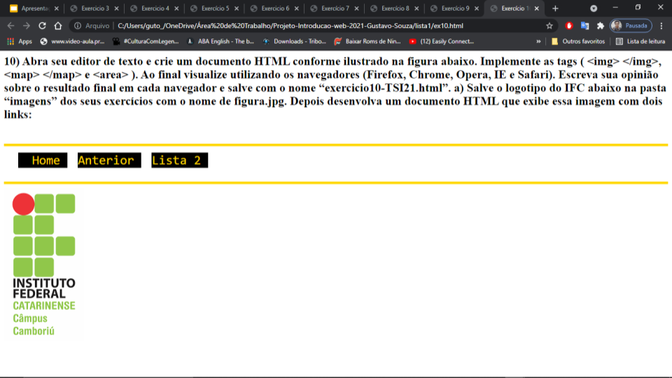
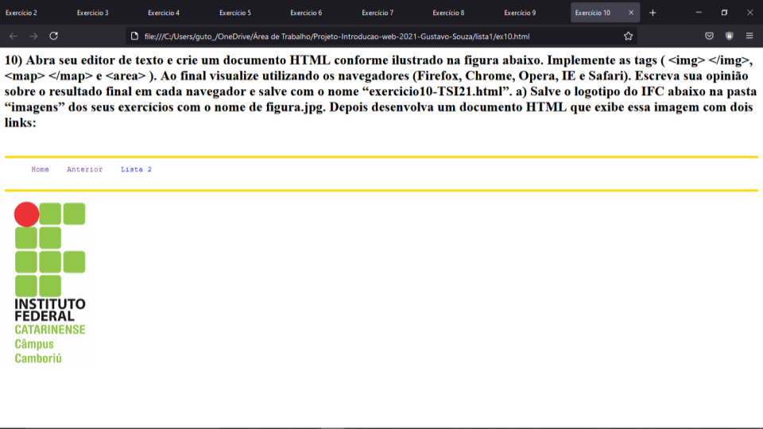
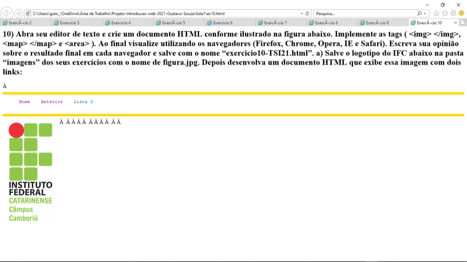

10) Abra seu editor de texto e crie um documento HTML conforme ilustrado na figura abaixo.
Implemente as tags ( <img> </img>, <map> </map> e <area> ). Ao final visualize utilizando
os navegadores (Firefox, Chrome, Opera, IE e Safari). Escreva sua opinião sobre o resultado
final em cada navegador e salve com o nome “exercicio10-TSI21.html”.
a) Salve o logotipo do IFC abaixo na pasta “imagens” dos seus exercícios com o nome de
figura.jpg. Depois desenvolva um documento HTML que exibe essa imagem com dois links:
Visualizando em outros navegadores
 |
|  |
 |
|  |
 |
|  |